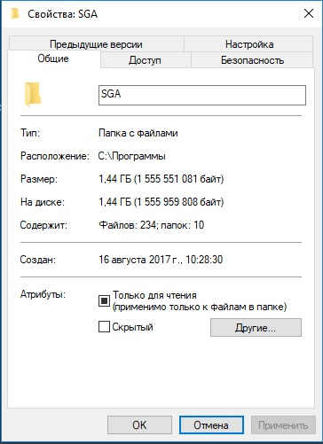
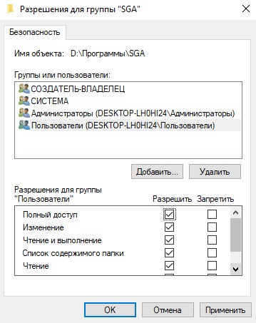

- Пройти по следующему пути (C:\Program Files (x86)), если при установке указывали другой путь, по нему.
-
Зайдите в диск С и введите в строку поиск следующее - "SGA", смотри рисунок 1.

Рисунок 1 - Поиск папки SGA
- Hажать правой кнопкой мыши по папке SGA.
- Выбрать надпись свойства.
- Нажать левой кнопкой мыши.
В результате этих действий должно открыться окно - свойства, смотри рисунок 2.

Рисунок 2 - Свойства папки SGA
Рисунок 2 - Свойства папки SGA
- Выбрать поле - безопасность.
- Выбрать строчку - пользователи.
- Нажать кнопку изменить.
- Поставить галочку полный доступ.
В результате у вас должно быть как на рисунке 3.

Рисунок 3 - Безопасность папки SGA
Рисунок 3 - Безопасность папки SGA